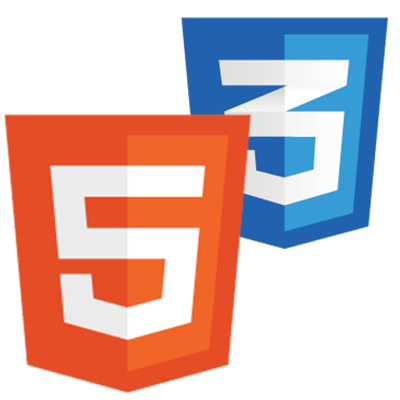

ABOUT
永山 優美香
Nagayama Yumika
2000年生まれ、茨城県出身。
趣味は音楽を聞くこと、韓国ドラマ、カメラ、
動画編集など多趣味な人間です。
デザイン知識が全くなかったため、
2022年1月～6月の
半年間Webデザインスクールに通い、
HTML/CSSを
中心に学びました。
現在は、JavascriptとUIUXの勉強中です。
SKILL
-

Adobe XD
デザインカンプ・ワイヤーフレーム作成が
可能です。
UI機能はまだ使いこなせていないため、
>
現在勉強中です。
-

Illustrator
文字と画像を組み合わせてレイアウト、
簡単なロゴ制作、文字の服飾が可能です。 -

Photoshopr
文字と画像を組み合わせてレイアウト、
簡単なロゴ制作、文字の服飾が可能です。 -

Premiere Pro
文字と画像を組み合わせてレイアウト、
簡単なロゴ制作、文字の服飾が可能です。 -

HTML/CSS
文字と画像を組み合わせてレイアウト、
簡単なロゴ制作、文字の服飾が可能です。 -

JavaScriput
文字と画像を組み合わせてレイアウト、
簡単なロゴ制作、文字の服飾が可能です。
私の耳について
私は、先天性感音性難聴を持っています。
聞こえを補うために右耳だけ人工内耳を装用しています。
聞こえ方は十人十色のように、それぞれの聞こえ方があります。
私の場合は、両耳で110㏈以上あり聴覚レベルで
一番重い
重度難聴のレベルになります。
耳元にドライヤーを当てたり、家の上に飛行機が
飛んでいたり、
車のクラクションを鳴らしても全く聞こえません。
しかし、右耳に人工内耳を装用した場合は20～30㏈に
下がります。
左耳は全く聞こえないため、右耳で情報を把握していますが
完璧に聞き取ることは難しいです。
そのため、手話・チャットなどを活用してコミュニケーションを
得ています。